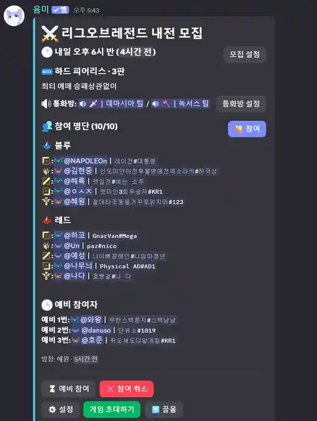
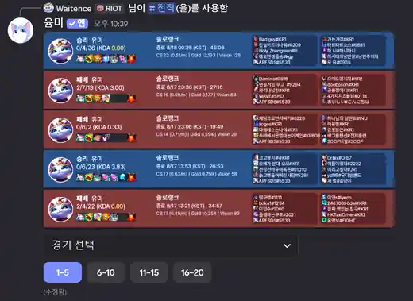
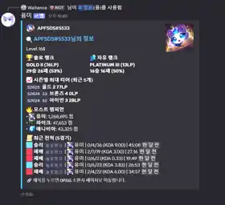

🔎
전적 · Riot 프로필
Riot ID, 현재·최대 티어, 최근 경기, 숙련도와 포지션 정보를 한 번에 조회합니다.
/정보/전적/프로필/숙련도전적 조회, Riot 프로필, 모집·내전 운영, 대회 관리, 그리고 Windows 로컬 League Client와 연동되는 LCU Agent까지 하나의 흐름으로 연결하는 Yummi 프로젝트입니다.
최신 Discord 화면을 기준으로 모집, 전적, 사용자 정보 흐름을 한눈에 볼 수 있습니다.

시간, 규칙, 참가자·예비 인원, 통화방과 운영 버튼을 하나의 Discord 패널에서 관리합니다.

챔피언, KDA, 아이템, 팀 정보와 경기 선택 UI를 포함한 전적 화면입니다.

솔로·자유 랭크, 시즌 최고 티어, 모스트 챔피언과 최근 전적을 빠르게 확인합니다.
기능을 따로 분리하기보다 Discord의 모집과 전적 흐름을 중심으로 웹 관리 기능과 League Client 연동을 연결합니다.
Riot ID, 현재·최대 티어, 최근 경기, 숙련도와 포지션 정보를 한 번에 조회합니다.
/정보/전적/프로필/숙련도증바람, 자랭, 5:5 내전 모집과 참가·취소·예비 인원·음성 채널 흐름을 관리합니다.
/증바람/자랭/내전/모집티어, 포지션, 저장된 참가자 정보를 바탕으로 팀을 배정하고 웹에서 수동 조정과 결과 관리를 이어갑니다.
참가 신청, 체크인, 팀과 시드, 대진, 경기 결과와 라이브 운영 기록을 웹에서 관리합니다.
Windows PC에서 League Client와 연결해 로비·파티 상태, 참가자 초대와 일부 클라이언트 작업을 이어줍니다.
/lcu/다운로드LCK 일정·예측, 출석·포인트, 퀴즈, 음성·사운드 기능 등 서버 운영에 필요한 도구를 함께 제공합니다.
/퀴즈/달력/출석/랭킹Discord와 브라우저가 사용자 접점이 되고, Bot/Web/API가 공유 상태를 처리하며 LCU Agent는 사용자의 PC에서 로컬 League Client와 연결됩니다.
Bot, Web, API, LCU Agent를 하나의 프로젝트에서 함께 개발하고 있습니다. 최신 구현과 변경 이력은 GitHub 저장소에서 확인할 수 있습니다.